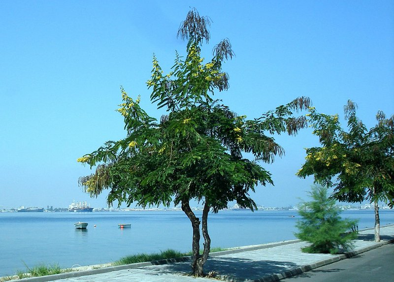

Surgimento
Surgimento Em 1966, um grupo de portugueses amantes de artes e cultura angolana pertencentes a ex¬câmara Municipal do Concelho do Lobito, deliberou por unanimidade a compra de um prédio pertença do Banco de Angola pelo preço de 500.000$00 (quinhentos mil escudos) a pagar por duas prestações iguais, destinado à instalação do Museu do Lobito. Em 1970, foi concluído a última prestação, ficando o edifício, localizado na Restinga, sob plena responsabilidade da Comissão Municipal de Turismo que desenvolvia na cidade, intensas actividades culturais de artes plásticas, filatélicas, numismática, etc. Esta comissão era presidida pelo Engenheiro António Vieira da Silva e o Sr. Osvaldo Leal e apoiada pelo arquitecto Francisco Castro Rodrigues.
Com o surgimento do 25 de Abril em Portugal e as grandes transformações que se seguiram nas ex-colônias em África, as sucessivas fugas dos portugueses para Europa, obrigou ao encerramento do museu de 1974 a 1976. O seu acervo, havia sido transferido para a ex¬-câmara sob custódia do arquitecto Francisco Castro Rodrigues, salvaguardando assim o importante espólio cultural angolano. A 11 Novembro 1978, reabre ao público com a devolução de todo patrimônio cultural sob sua guarda. Desde então o museu continuou com as suas actividades recebendo peças etnológicas de várias partes do país. Os seus trabalhos de pesquisa estão estagnado